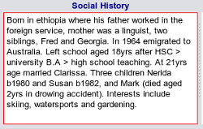

Social History
Social history is often neglected in clinical notes as we watch the continued demise of general practice
and it's disappearance into a business run by corporations on a $$basis, where the practioners come, do their
job, treat symptoms and leave.
However for those of us old enough to have looked after patients longitudinally for decades, a good
social history is the cornerstone of patient care.
You can enter your social history via the family history section and, as per the example here we
would suggest the following minimum details:

- Parents and their occupations including origin and relevant social comments
- Siblings including names and relevant social comments
- Schooling level, age left
- Higher education and training
- Brief work history see
Occupational History
- Marital history, children including any significant events such as loss of a child, divorce
- Personal interests